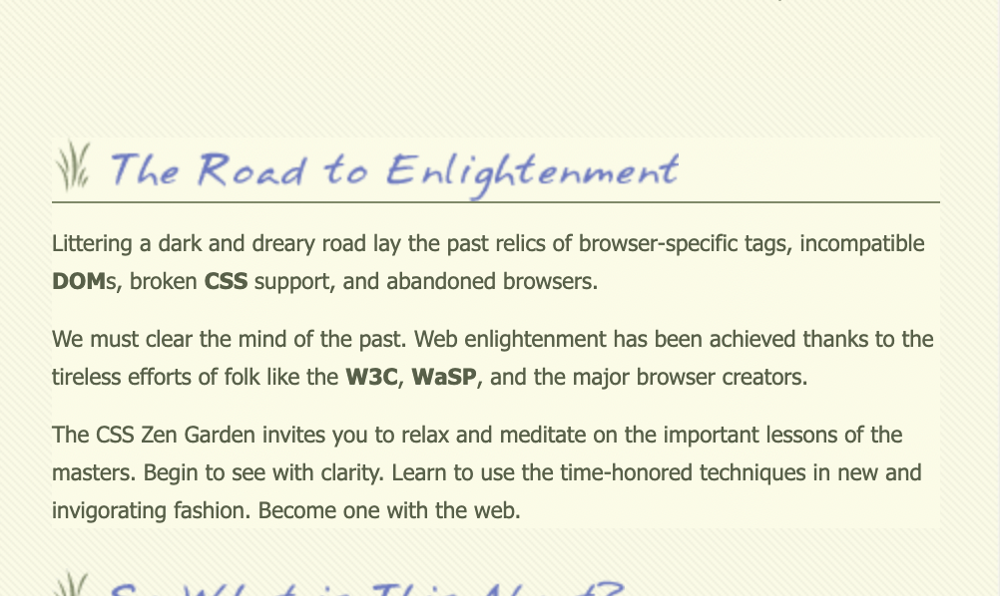

Week 6
Labo 2
Opdracht 1
Herschrijf de volgende CSS code
Opgave:
.menuitem {
display:inline-block;
width:150px;
}
.menuitem > a {
color:red;
}
Antwoord:
ul {
display:inline-block;
width:150px;
}
ul > li {
color:red;
}
Opdracht 2
Dit stukje code maakt gebruik van negatieve margins om de groep tekst te verschuiven naar boven om minder dead-space te gebruiken. Wanneer je de negatieve margins verandert naar een positieve variant zal er veel meer dead-space zichtbaar zijn op de pagina.
Voorbeeld zonder de negatieve margin-top
Opdracht 3
Ga naar de resume opdrachtOpdracht 4
Ga naar de opdrachtOpdracht 5
HyperlinkOpdracht 6
Schrijf een HTML pagina met bijbehorend CSS bestand om dit te realiseren d.m.v. een icoontje
- boter
- kaas
- eieren